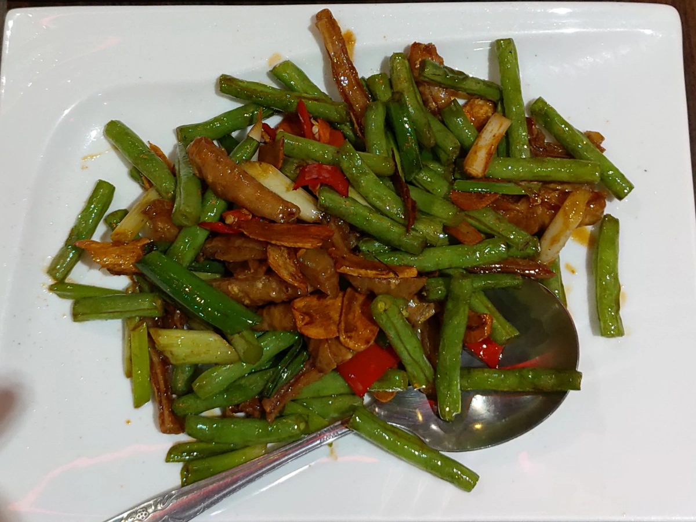

[竹北] 胡同大媽 竹北店
| 餐廳名稱: | 胡同大媽 竹北店 ，另外有 中山店、北投會館。 |
|---|---|
| 地 址: | 新竹縣竹北市成功二街188號 |
| 營業時間: | 11:00~14:00 / 17:30~21:00 |
| 電 話: | 03 668 4458 |
今天到燦坤買點小零件，結束後，反正車已經停在成功二街、自強南路這邊的停車場了， 就在附近找間餐廳吧。看了一圈，胡同大媽 很久沒吃了，知道他2017年曾經經營不善， 還好有新的老闆接手，今天就算是檢查看看，換了新老闆後，有無退步。
胡同大媽全盛時期我還蠻喜歡的，當時該集團的北投店叫做采豐餐廳，位於 台北捷運 的北投機廠內，停車很方便，如果跟朋友到附近，通常就跟跟朋友約在那裏用餐，不然北投通常是不好停車。 而且因為整棟樓是台北捷運的員工訓練中心，底下還有一些電動玩具、運動設施，能溜小孩。 印象中，它的酸湯魚、催淚蛋做得蠻好的。 竹北店當時也吃過，跟北投店差不多。新老闆接手後，采豐餐廳 改名為 胡同大媽 北投旗艦店，而另外兩間本來就叫胡同大媽，全部都統一了。
裝潢沒啥變，以前就這個樣子，比便宜川菜館豪華，暗示價格會貴一些。 後方有樓梯可到二樓包廂。
官網菜單 比較清楚，而且有各式菜色的照片，只是沒列價格。 這裡的菜單有價格，但都被這個 theme 自動縮小了，網友可在瀏覽器當中，用滑鼠右鍵點選圖片，再選 “檢視圖片” 功能，放大來看。

牆壁上，貼了一些新菜。
第一道是水煮牛，這裡的水煮牛算是不差，是正宗的做法，至少比一些非川菜餐廳，看這道菜出名容易賣，亂學亂做 好多了。 但可惜就是，既生瑜何生亮，偏偏竹北老灶房私房料理 跟 頭屋 長興私房料理 這對 父子檔的水煮肥牛 超強，我吃到現在 仍是打遍天下無敵手，我的取樣大約二十幾家以上了，不要懷疑我是井底之蛙了，你們去老灶房吃吃就知道。 但看在胡同大媽水煮牛份量大，這道菜的價格能接受。
金沙軟絲，這道菜好吃，不過吃了才發現有一部分是炸油條。剛上菜時，心中還竊喜份量大，真是的。雖然油條跟軟絲裹上金沙都好吃， 這道菜的價格算是稍微不能接受。
乾煸肥腸，算是好吃，可是炸肥腸太少。然後，四季豆可能是為了健康導向，感覺是熱水煮的。 同時四季豆份量多到不像話，掩蓋炸肥腸的不足。這道菜的價格不能接受，下次不會再點了。 
今天菜當然吃不完，自備玻璃容器打包回家了。這次菜點的不好，可能點酸湯魚、催淚蛋、老皮嫩肉 等，會好一點吧。 這樣又讓我想到，竹北九品田小館 的酸湯魚、催淚蛋、炒飯好吃。至於跟胡同大媽誰的好吃，再找機會鑑定吧。
胡同大媽定位在高級川菜館，裝潢不錯好停車，比較適合宴客。價位稍高，不過謹慎點菜的話，應該還是不錯啦。